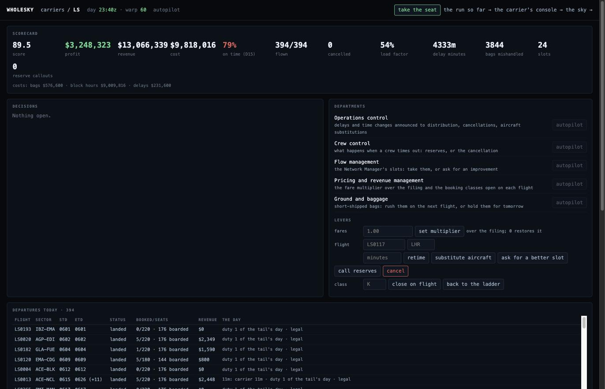

Open source · Go · MIT licence · by Adam Fletcher
wholesky simulates one day of the world's airline network as the messages airlines send each other.
518 airlines, three global distribution systems and one message switch, each running as its own system with its own records. Nothing passes between them except Type B and EDIFACT messages over TCP sockets, the wire formats the industry has used since the teletype. The globe, the leaderboard and every number on this page are read from those messages.
jetway is the software every one of those systems runs. It is an open-source airline messaging gateway that is also a reservations system, a seat inventory, a departure-control system, a fare engine, a datalink and AFTN endpoint and a message switch. It speaks Type B/AIRIMP, EDIFACT/PADIS, NDC and MATIP and is built for production use. wholesky runs jetway at the scale of the industry.
Ways in four, one API
Watch
The globe at night, thousands of aircraft as points, the price bar on top. It shows only what the Type B and EDIFACT messages contain. If a departure is on the globe, an MVT went through the switch. Click any aircraft to see what its carrier holds for that flight, from the schedule to the loadsheet.
/stats is the instrument panel: time-series charts of the world. /fleet lists every node and opens its console. The recorded Thanksgiving eve runs at wholesky-thanksgiving.fly.dev.
Open the live globe /stats /fleet
Take a carrier in the browser
Every carrier runs on autopilot: rules make the decisions that an airline gives to people. Take a seat and those decisions are yours, department by department: operations, crew, slots, pricing and ground. Each decision states the situation, the options, the cost of each, a default and a deadline. Your answer goes out on the wire as messages. Miss the deadline and the simulator applies the default.
Levers: cancel, retime, substitute, close a class, move the fares, ask the Network Manager for a better slot, call reserves. One shared leaderboard: revenue, cost, profit, on-time rate, cancellations, load factor, score. Every run is recorded and replays at /replay/<id>.
Type a name, take a carrier, switch departments to manual, answer the decisions.
Open the ops centre More on running a carrier
Point an agent at it
Every action on the page is JSON over HTTP. cmd/skyagent serves it as MCP tools over stdio: lobby, take_seat, carrier_state, inbox, set_department, decide, act, weather and note. An agent has no action that a person lacks. A seat can pass between a person and an agent during the day.
Claude Code or Claude Desktop configuration:
{ "mcpServers": { "wholesky": {
"command": "go",
"args": ["run", "github.com/adamf/wholesky/cmd/skyagent@latest",
"-world", "https://wholesky-demo.fly.dev"] } } }
Then say: "take the seat for BA, switch ops and crew to manual, and answer the inbox as the day goes; beat the autopilot's score."
Watch Claude run Jet2 for a day cmd/skyagent
Run your own world
git clone https://github.com/adamf/wholesky && cd wholesky && go test ./...
go run ./cmd/worldc -countries "United Kingdom,France,Germany" -carriers 30 -o europe.json
go run ./cmd/skyd -world europe.json -carriers 12 -demand 8 -warp 240
# console on http://127.0.0.1:8080 · the eye at /eye
worldc compiles a deterministic manifest of airports, carriers and daily flights from the vendored OpenFlights snapshot. The same seed produces the same world. Pass -bts and -date for a recorded day. skyd boots the switch, the tenants and the distribution systems on loopback and runs the flight day at -warp.
Single box is the default. The demo spreads the same assemblies across six machines, and deploy covers both shapes, Kubernetes and the production plan.
wholesky on GitHub Deploy
The system components that match the industry's own, each stating what is specified and what is inferred
The eye
The eye is an orthographic globe drawn from the switch's message bus. An aircraft appears when its carrier's MVT departure message crosses the switch and lands when the arrival message crosses. Sparks are messages in flight to and from a carrier's home. A red halo marks a closed airport. Its size is the number of queue items a person must now rework.
Click any aircraft to see what its carrier holds for that flight. The panel shows the schedule and, on a recorded day, the recorded outcome. From departure control it shows the clock and the name list with its parts and amendments, the seat map by cabin, the connections, the load and the loadsheet. From the operations desk it shows the callsign, the flight plan and the tower replies. It lists the manifest name by name, and under each name the bookings under the locators the selling channels issued, each with its fare.

Carriers, each a reservations system and a departure-control system
Each carrier is a jetway gateway with its own book of record, seat inventory, locator space and console. It answers sells from its cabins, files its schedule changes and runs its airports. Reservations sends the airport the name list at T−180. The counter fills in waves, sending seat assignments and bag tags to sortation. The ADL goes at T−60, the counter closes, the gate boards, and the sortation system reports the hold. The door closes at T−10, after the airport names and pulls any loaded bag whose passenger is not on board. The final sales, transfer, service and load messages then go out with an AHM 560-method loadsheet.
The reservations and departure-control halves communicate over the network as separate systems. Requests to a carrier hosted on another machine go through federation. The switch cannot tell the difference.
Distribution: three global distribution systems
1G, 1S and 1A each run a jetway gateway with queues, an availability cache and a share of demand. A booking starts at the GDS. The GDS sends the sell to the carrier as AIRIMP over Type B or PADIS over EDIFACT. The carrier answers KK, US or UC from its inventory, and the record carries every carrier's locator for the same booking. Interline itineraries settle across carriers, and the GDS issues and advises tickets. A share of demand arrives as NDC orders on the GDS's HTTP endpoint.
The record shows what the carriers answered. When a carrier cannot be reached, the GDS puts the booking on the divergence queue. Each queue item names the gap that caused it.
- queues
- confirmation · waitlist · unable · divergence · schedule change · ticketing
- books
- bounded memory, or Postgres with one node view per system
- IROPS
- a cancelled flight queues every booking on it. Reaccommodation protects on own metal first, then on the codeshares the carrier markets under its own number, then on interline partners. It waits for each carrier's answer.

The switch
The switch is a full jetwayd in relay mode with about 500 TCP listeners. It frames each link and relays by Type B address line and EDIFACT UNB recipient. It has a write-ahead spool, per-peer rate limits with a shared cap, and a lease for standby takeover. Each link has an outbox that refuses new messages when a peer stops reading, rather than stalling. Every message crosses the switch, so the globe is drawn from the switch's bus alone.
Global reservations traffic in the industry is a few thousand messages a second. The switch peaks above 16,000 messages a second on one 4-vCPU machine during the departure banks. The difficulty is the topology. 522 nodes each hold one link and address every other node through it.
- invariants
- the switch captures before it interprets · it never regenerates raw bytes from a parse · it discards nothing it cannot decode
- metrics
jetway_outbox_depth·jetway_outbox_congested_total·jetway_ingress_links·jetway_spool_depth

Fares and inventory
jetway's pkg/fare holds the structure of a fare filing. It has fare basis codes, rules for advance purchase, stay, season, change and refund, taxes by kind, and passenger types with their discounts. Every booking passes through its pricing step. It carries no fares of its own, because ATPCO fares are licensed. wholesky files a synthetic tariff from the schedule's distances, with 14 booking classes per market and US-shaped taxes. It prices every booking as of its purchase date.
pkg/inventory provides leg-based seat control. It has cabins per leg, serial nested class authorisations, and waitlists one tenth of the cabin deep. A full cabin waitlists a sell. A closed class refuses a sell even when the cabin has seats. The last seats sell at the higher fares. Each carrier rebuilds its inventory from the book of record at every boot, because an in-memory count of sold seats oversells after a restart.
| the recorded day | value |
|---|---|
| whole day, 29,967 legs | $719M |
| average per passenger-leg | $255 |
| median per passenger | $204 |
| full-fare Y · business · deep discount | $341 · $750–785 · $93–160 |
| taxes | 15% |
These fares are synthetic and labelled as synthetic. They follow the shape of a Thanksgiving Wednesday tariff and copy no carrier's filing.

Operations: datalink, the AFTN and irregular operations
Aircraft report OUT/OFF/ON/IN over a datalink provider, in ARINC 620 shapes from OAG's published tables. Operations derives the MVT from the report rather than asserting it. Flight plans go to the towers over the AFTN (ICAO Annex 10). The towers send DEP and ARR back. A diverted flight sends its DIV to the field where it landed.
When a flight is cancelled, the carrier queues every booking on it. The IROPS engine works the queue, starting with the next flights over the same city pair on own metal. It uses free sale where the availability cache offers it, and otherwise sends a request to the carrier and waits for its answer. A confirmed seat replaces the cancelled leg with a sell and a cancel message on the wire, and a waitlisted seat is kept and named. Bookings that no flight can carry stay on the queue for a person, while the airport offloads checked-in passengers and pulls their bags.

The filler and the demand
internal/fill simulates the weeks of sales before the day. It reads the schedule and writes each carrier's book of record before the day runs. Party sizes follow the pattern of holiday travel. Itineraries connect only on legs with a valid connection, and booking classes go into cabins with room on every leg. Records include children, infants and special service requests at industry rates. Each record has a ticket per name, the carrier's locator and the selling channel's locator, a purchase date in the months before, and a price as of that date. The filler is deterministic from a seed and writes to Postgres with COPY. Southwest's day alone is 260,000 records, written in 24 seconds. One party in 3,000 has a cello, and the cello has a seat.
The demand generator then adds the day-of-travel bookings on top. These arrive at hundreds of bookings a minute, with connections, interline, ticketing, cancellations, divides, and a share arriving as NDC orders.
- holiday load
- 0.85: 1,400,987 records, 3.1 million seats held before the first flight, 3.5 GB
- what it found
- a Type B line folded by the first family of four, the 60-line envelope overrun by a filled 737, and a link deadlocked by both ends answering from inside their read loops. Each fix is in jetway with a regression test.

The audit of the running world
The invariant suite is the release gate. In process, internal/sim/invariants_test.go checks for no oversell across selling channels, message conservation at the switch, and interline convergence. It also checks that a cancelled flight queues every booking. Live, every shard reports its inventories and the core federates them. skycheck exits non-zero when a cabin holds more passengers than seats, or when a shard did not answer. A machine that is down must not read as a pass.
$ go run ./cmd/skycheck https://wholesky-demo.fly.dev
6 shards, 8074 cabins, 126321 seats sold, 0 oversoldIts first run against the recorded day found 88 oversold cabins. 83 of them were business cabins on Hawaii legs, holding up to 54 passengers in 32 seats. The filler had drawn booking classes without reading the aircraft type.
Recorded data and synthetic data
Taken from the industry and the BTS record: the wire formats and their published rules, the state separation, the failure modes, and the recorded day's schedule, tails, delays by cause, cancellations and diversions.
Synthetic and labelled as synthetic: the passengers, the aircraft types inferred from carrier and stage length, the seat counts, and the fares. The tariff follows the shape of a published filing but copies none.
Run a carrier one of 518, against the autopilot
For people: the operations centre
Every carrier runs on autopilot: rules make the decisions that an airline gives to people. Take a seat and those decisions are yours, department by department. In each department you run, the simulator sends you every decision. Each decision states the situation, the options, the cost of each, a default and a deadline. Your answer goes out on the wire as messages, and the simulator applies the default if you miss the deadline. The scorecard uses the same formula for every carrier.
The lobby is a leaderboard of revenue, cost, profit, on-time rate, cancellations, load factor, score and seat holder. It has a search box and favourites, answers in under a second, and links each seat's last run. When you take a carrier, you get its inbox and its departments as switches for operations, crew, slots, pricing and ground. You get the levers: cancel, retime, substitute, close a class, move the fares, ask the Network Manager for a better slot, and call reserves. The departures board shows the state of each flight, with the slot and its cause, the crew's legality, the late aircraft and the bags.
The seat holder can book and board from the carrier's jetway console at /node/XX/. Everyone else can only read it. docs/security.md states what an anonymous user can and cannot do to a world.

For agents: the same API as MCP tools
Every action on the page is JSON over HTTP. cmd/skyagent serves it as MCP tools over stdio: lobby, take_seat, carrier_state, inbox, set_department, decide, act and weather. Claude Code or Claude Desktop can then run an airline against the world with no code. An agent has no action that a person lacks, and a seat can pass between a person and an agent during the day, because the seat token is the seat.
A note tool puts the agent's reasoning on the carrier's tape. The core records the run from take to release, and /replay/<id> plays it back against the scorecard, live while the agent holds the seat.
{ "mcpServers": { "wholesky": {
"command": "go", "args": ["run", "github.com/adamf/wholesky/cmd/skyagent@latest", "-world", "https://wholesky-demo.fly.dev"] } } }
Then give the agent this instruction: take the seat for BA, switch ops and crew to manual, and answer the inbox as the day goes; beat the autopilot's score.

A recorded run: Claude's day at Jet2
Claude Code took the Jet2 seat on a western Europe world of 5,364 flights at warp 60, with skyagent as its MCP server. It held the seat from 06:55 to 22:49. In the morning wave, three weather cells imposed slots on the flights. It received 159 decisions and answered every one before its deadline. It accepted slots under 20 minutes and sent REA for the rest, announced every delay, rushed every bag, held fares on eight fare cuts and matched three. It cancelled no flights and wrote 87 notes that give its reasons.
docs/run-a-carrier.md gives the steps to record a run of your own.
Bring your own jetway
A carrier is a jetway node with the world's schedule and addresses, and the switch accepts that node from any location. Take a seat, then claim the carrier, and the world disconnects its own tenant and sends you the start pack. The pack holds a jetway configuration with the switch address and a link token, and the carrier's schedule as an SSIM file. Run jetwayd with the pack, and your node is the airline on the world's wire. The distribution systems sell into your inventory, and your departure control opens flights from your own name lists. Your desk files the MVTs that the globe draws.
curl -s -X POST -H "X-Seat-Token: $TOKEN" https://wholesky-demo.fly.dev/carrier/BA/claim > pack.json jq -r .config_yaml pack.json > ba.yaml; jq -r .ssim pack.json > ba.ssim go run github.com/adamf/jetway/cmd/jetwayd@latest -config ba.yaml
Register the URL of your node and the world runs the timed ground events of your flights: the name list 3 hours before departure, and check-in, boarding and the load 45 minutes before. On the demo the switch ports sit behind Fly's shared IPv4 address, which carries HTTP only, so a node that dials wholesky-demo.fly.dev:7000 needs IPv6. The design, and the parts still missing, are in docs/run-a-carrier.md.
Multiplayer people, agents, your own nodes and other worlds, on the same three commands and one API
1 · A group on the demo without an install
Everyone opens wholesky-demo.fly.dev/ops/, types a name and takes a carrier. Each seat holder switches their own departments to manual and answers the decisions the simulator sends. The leaderboard is shared, and the 500 carriers that nobody holds run on autopilot alongside you. Each seat covers one carrier, so 100 people can run 100 airlines on one world at the same time.
2 · Your own world for a group
One machine runs the day, and your group connects from their browsers:
go run ./cmd/worldc -countries "United Kingdom,France,Germany" -carriers 40 -o world.json
go run ./cmd/skyd -world world.json -warp 6 -console :8080 -decision-window 90s
# share http://your-host:8080/ops/
Warp sets how fast the day runs. The decision window sets how long a seat has before the autopilot decides. The recorded Thanksgiving eve works the same way with -bts at compile time. For a world that stays up, deploy/k8s reproduces the demo's layout on Kubernetes.
3 · Agents in the seats
An agent runs a carrier through the same API a person uses. cmd/skyagent serves it as MCP tools over stdio. Claude Code or Claude Desktop needs only the configuration under Point an agent at it. The core records every run, the agent narrates with the note tool, and /replay/<id> plays its reasoning back against the tape and the scorecard. People and agents share one leaderboard, and a seat can pass between them during the day. Claude's day at Jet2 is one such run.
4 · Bring your own jetway
This is the most demanding option. Take a seat, claim the carrier, run jetwayd with the start pack, and your node is the airline on the world's wire. The commands and the ground-event schedule are under Run a carrier. jetway speaks Type B/AIRIMP, EDIFACT/PADIS, NDC and MATIP, so any node that speaks them can take the seat.
5 · Worlds joined to worlds
Two worlds join into one network through their switches. The switches hold a trunk, each routes the other's subscribers down it, and each sells the other's flights. You give the second world the address of the first. The join is a handshake, and the traffic is Type B and EDIFACT over the trunk.
# machine A skyd -world europe.json -world-name europe -console :8080 -public-url http://a.example:8080 -link-port 7000 # machine B skyd -world americas.json -world-name americas -world-code 1Z -world-city MIA \ -console :8080 -public-url http://b.example:8080 -link-port 7000 -peer-world http://a.example:8080
Carrier designators, switch codes and distribution-system cities must differ between worlds, because the network uses them as addresses. Joined worlds' carriers appear on each other's leaderboards. wholesky-mirror.fly.dev is a second world with every carrier renamed, trunked to the demo. Its carriers appear in the demo's lobby under mirror.
Known limits
- There are no accounts. A seat is a token, and whoever holds the token holds the seat.
- On the demo the switch ports sit behind Fly's shared IPv4 address, which carries HTTP only. A node that dials
wholesky-demo.fly.dev:7000needs IPv6, and the mirror world's trunk does not stay up there. A dedicated address or the Kubernetes layout removes that limit. - The scorecard's cost model is a chosen shape. The lobby ranks the score against the world, and the ops centre shows the raw score.
- The simulator sends five kinds of decision.
- The fares are synthetic and labelled as synthetic.
- The list of missing systems, in the planned order, is at the end of docs/missing-systems.md. The design is in docs/run-a-carrier.md. docs/security.md states what an anonymous user can and cannot do to a world, and lists the open decisions.
Deploy a laptop, six machines, or a cluster
Locally
git clone https://github.com/adamf/wholesky cd wholesky && go test ./... # compile a world, then fly it go run ./cmd/worldc -countries "United Kingdom,France,Germany" -carriers 30 -o europe.json go run ./cmd/skyd -world europe.json -carriers 12 -demand 8 -warp 240 # console on http://127.0.0.1:8080 · the eye at /eye
worldc compiles a deterministic manifest of airports, carriers and daily flights from the vendored OpenFlights snapshot. The same seed produces the same world. Pass -bts and -date for a recorded day. skyd boots the switch, the tenants and the distribution systems on loopback and runs the flight day at -warp.
Single box, -role all
The default and the test bed. It runs one OS process, with every jetway instance as a library assembly and all traffic between them crossing TCP on loopback. The switch cannot tell this shape from the six-machine demo.
Stores
In memory by default, or in Postgres with -tenant-dsn and -gds-dsn. Records are partitioned by their retirement day and dropped when the day ends.
Two deployment shapes from one codebase
Single-box (-role all) is the default and the test bed. It runs one OS process, with every jetway instance as a library assembly and all traffic between them crossing TCP on loopback. Multi-machine is the deployed demo. It spreads the same assemblies across six machines, dialled together over a private network. The switch cannot tell the two shapes apart.
A minimal federation protocol
Peers register with the core and send a heartbeat every few seconds. The reply carries the switch's link addresses, the current warp and the closed-airport set, so liveness, time control and chaos travel on one message. The fleet board merges every peer's rows and proxies drill-downs and consoles to the machine that owns the node. A region can fail and restart while the rest of the world keeps flying. To rejoin, it registers and dials back in.
What crosses the wire
The links carry sells and their answers, availability broadcasts, name lists and their amendments, and check-in and bag messages between reservations and the airport. They also carry load and passenger lists at door close, and movement messages from the datalink provider. Flight plans and tower replies cross over the AFTN, with schedule changes and ticket control. Nothing else crosses the links. Observers only tap the bus.
The deployed shapes
| app | machines | what |
|---|---|---|
| wholesky-demo | core · gds1g · gds1s · gds1a · region0 · region1 | the synthetic world at warp 6, carriers' books in bounded memory |
| wholesky-thanksgiving | one machine, -role all | the recorded day at warp 1, books of record and distribution systems' books in Managed Postgres |
Both apps deploy from fly.toml and fly.thanksgiving.toml. The roles are core, gds, region -shard N -shards M and all. Peers find the core with -core-url and advertise themselves with -self-url. For a carrier's host or a switch that carries production traffic, the SRE plan has its own page, deploy to production. It covers topology, the lease, database provisioning, DR, the alerts, and load testing as the release gate.
Running the demo taught five lessons, and each is now in the code. A filled 737's name list does not fit in one Type B message, so the name list has three parts. A link's outbox refuses new messages rather than stalling when the peer stops reading. A seat inventory is rebuilt from the book of record at boot, because a count kept in memory oversells after a restart. Two worlds no longer share one small database, and a partition that cannot be created no longer stops the write.
Kubernetes
deploy/k8s reproduces the demo's layout on Kubernetes for a world that stays up. It runs the machines as StatefulSets behind an Envoy edge that terminates TLS for the console and passes the switch ports through as raw TCP. It has a certificate from cert-manager, a GKE overlay and a laptop overlay for kind. The image workflow publishes to ghcr.io on every push to main.
A dedicated address on the edge removes the demo's shared-IPv4 limit, so nodes and other worlds can dial the switch over IPv4.
deploy/k8s on GitHub Deploy to productionThe Wednesday before Thanksgiving 2025 at real time
worldc reads one day of BTS on-time data. The data covers every US scheduled flight, with its tail, delays by cause, cancellations and diversions. skyd flies the day at warp 1, so the run takes 24 hours.
The MVTs carry the record's delay codes. Departure control opens each flight 3 hours out and closes it at the door. The manifest, load and loadsheet come from the simulated day. Every flight in the schedule comes from the record. The synthetic parts, the passengers, fares and aircraft types where BTS gives none, are labelled in the manifest. When the sim day ends, the books are purged by daily partition and refilled deterministically from the seed.
Watch the recorded dayThe project why it is different, the engine, how the work is done, what is missing
Working airline systems under the globe
Flight-tracking sites draw positions and airline simulators draw aircraft. I wanted the map to be a side effect of the messages, so wholesky draws only what the industry's own messages say. A working airline IT stack runs under the globe.
A message behind every mark
An aircraft appears when a Type B departure message crosses the switch, and lands when the arrival message crosses. A passenger is on a name list because reservations sent that list to the airport. When an airport closes, a red halo grows over it, sized by the bookings a person must now rework. The globe draws nothing without a message.
Separate state for every node
Every carrier has its own book of record, locator space, seat inventory and console. The distribution systems hold their own copies under their own locators. Nodes share nothing except the messages between them. A region can fail and rejoin. The switch cannot tell whether a peer is on loopback or on another continent.
An engine built for production
jetway is a gateway, GDS, DCS and switch with a spool, a lease, retention, rate limits, metrics and a production plan. Simulation-only behaviour stays in wholesky. When wholesky exposes a bug in jetway, the fix goes into jetway with a regression test. Ninety-five jetway releases have come out of that so far.
Labelled sources for every format
Most airline formats are defined in paid documents that this project did not buy. Every package states whether its layer is specified by a public standard, inferred closely from published examples, or inferred. The passengers, aircraft types and fares are synthetic and labelled as synthetic. The schedule, tails, delays, cancellations and diversions on the recorded day come from the BTS record.
A recorded day at real time
The simulator flies the Wednesday before Thanksgiving 2025 from the BTS record. The 22,889 flights fly on their recorded tails, with their recorded delays, cancellations and diversions. 1.4 million pre-sold bookings at a holiday load each carry a price. The run takes 24 hours, the same as the recorded day.
A live audit of the running world
The invariant suite is the release gate. It checks for no oversell across selling channels, message conservation at the switch and interline convergence. Any shard answers a live check on request. Its first run against the recorded day found 88 oversold cabins. The cause was a filler that did not read the aircraft type. Every failure is in the changelog.
The engine: jetway
Every importable package lives in jetway. The codec packages are typeb, edifact, airimp, padis, avs, ssim, ndc, matip, pnr, pnl, baggage, mvt, dcs, aftn, ats, acars and fare. The application packages are gateway, store, inventory, irops, node, queue, ingress, egress, transport, spool and api. jetway is built for production use as a gateway, DCS or message router. Simulation-only behaviour stays in wholesky. Each package's doc states whether its format is specified by a public document or inferred from free reproductions. The roadmap names the paid documents that are missing and what each would add.
Working practices
Conformance labels for every package
Most airline formats are defined in paid IATA documents that this project did not buy. Every package states its layer. A specified layer follows ISO 9735, RFC 2351, Annex 10, the Type B whitepaper, the PNRGOV guide or the NDC schemas. An inferred closely layer is built and tested against verbatim published examples. Other layers are inferred. Do not write a doc comment that implies conformance you cannot demonstrate. When public sources disagree, implement one, make it advisory, and document the disagreement.
A search for free sources before declaring a format blocked
Every search so far has found a source. The free PNRGOV guide fixed four PADIS bugs whose tests had encoded the same guess as the code. The free EMD guide fixed three coupon statuses. The free Type B whitepaper gave the 4 KB cap and PDM. Look for tables of contents, regulator guides, vendor and airport reproductions, and adjacent free standards. Then state precisely what remains unknown.
Testing discipline
- A new test counts only after you have watched it fail against the old behaviour.
- Check against an external artefact where one exists. Fuzz round trips for any codec. Write fixtures by hand from the spec rather than from your own builder.
- Store changes must pass the conformance suite against both backends (
JETWAY_TEST_DSN). - Write a scenario for anything that crosses a link. Unit tests do not catch faults that appear only with a partner on the other end.
- CI runs
gofmtand the race detector. Watch the run after every push.
Conventions
- Comments explain why. Write Go doc on every exported symbol, in prose. Use British spelling.
- Commit messages have a body that explains the reasoning, wrapped at 72 columns.
- When wholesky finds a bug in jetway, fix it in jetway, tag a release and pin it. Nothing that exists only for the simulation goes into jetway, which must stay usable in production.
- Migrations are numbered without gaps. Do not edit a migration after it has been applied anywhere. Do not drop a partition by hand under a running process.
- Open an issue or a pull request on either repository. Both are MIT-licensed.
Missing systems
Several systems are still missing. The interline invoices have their proration, billing and agency memos, but not IATA's IS-XML to carry them. Revenue management has ladders, a booking-curve forecaster and the network programme's bid prices, but no forecast learned from history. There is no Secure Flight-style vetting. A short-shipped bag runs its AHL, OHD and FWD story as a profile, without WorldTracer's own formats. Weather systems, EUROCONTROL-style regulations and slots, and late-aircraft chains are done, while the FAA's CDM ground stops, the slot-swapping dialogue and weather that closes an area outright are not. Crew has Part 117 legality, reserves and cancellations, and no pairings across days. Maintenance and rotation, airport systems, cargo, and Type B over MQ as some carriers still receive it are absent.
The ordered list, with what each would add and exercise, is docs/missing-systems.md. The cost of full load is in docs/full-throttle.md.